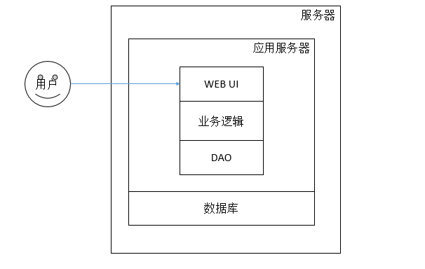
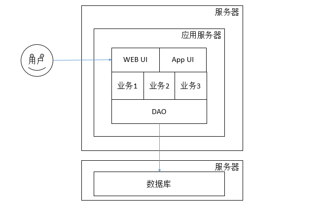

4. 单体应用
假设我们要开发一个网站，通常一开始可能会是这个样子。

我们需要一个数据库（比如MySQL）来存储结构化数据，还需要一个应用服务器（如Tomcat）来部署我们的网站。当开发完成，我们就可以租一台服务器，安装好数据库和应用服务器，把开发完成的应用程序打包部署上去，就像我们开发时在本机所做的一样。
这就是单体应用（Monolithic Application）。单体应用是自包含的，它在一个应用里实现了该应用所需的全部功能。
当然，虽然只是一个简单应用，一般开发的时候也会遵循一些最佳实践给应用分层，如把业务逻辑抽象出来，在数据库之上构建数据访问层。 随着业务的增长，模块化不可避免，于是业务逻辑层逐渐演变成由不同的业务组成。用户界面通常也会按不同的业务细分，或者分为手机端和网页端等。随着单机负载告警，一般会先考虑把数据库搬出去。这时，已经可以说是一个简单的分布式系统了，因为应用与数据库分布在不同的网络计算机之上，需要通过网络来进行通信，尽管它们可能只是放在同一个机房的两台机。

不过从应用来说，它还只是一个单体应用。这时，从管理的角度看，一般整个团队会分为：前端团队、业务1团队、业务2团队、业务3团队、维护团队等等。虽然已经模块化，但是每一次发布，都要把每一个模块和子项目的修改合并上来，再打包、测试。随着系统变得越来越庞大，这个周期也越来越长，进行任何一次微小的修改都代价昂贵。只有少数人能理解里面发生了什么，没人敢保证某一次哪怕是很小的修改（发布）不会出问题。只能把希望都放到漫长的测试阶段，给客户、团队和自己一些证据和安慰。这就是所谓的单体地狱，也是本人的亲身经验。我之前曾参与过的一个项目，光编译和打包就需要超过30分钟，其臃肿程度可想而知。
另外，单机性能升级的瓶颈显而易见，升级成本高，其稳定性和可用性也更难维持，这些都使得我们不得不转向分布式，比如考虑数据库的垂直和水平拆分，建立应用服务集群，进行应用拆分和服务化。特别是云服务和容器技术的高速发展，使得我们可以按需求弹性地随时增加和减少服务器，更加推动了分布式服务体系的发展。反过来，衡量一个分布式架构到底好不好，主要就是要看它能不能优雅地支持：通过增加或减少服务器就能提高或降低整个系统的容量和性能。